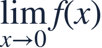
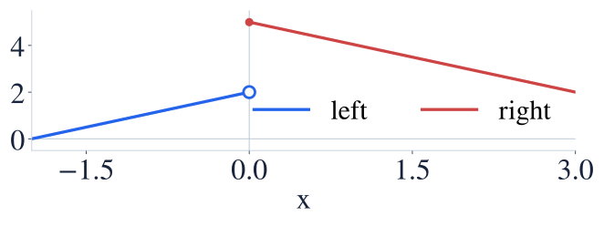
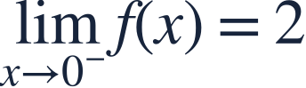
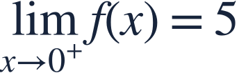
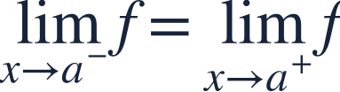
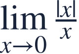

One-sided limits
좌우극한

A two-sided limit needs agreement from both directions.
양쪽 극한이 있으려면 왼쪽과 오른쪽이 합의해야 합니다.

A two-sided limit needs agreement from both directions.
양쪽 극한이 있으려면 왼쪽과 오른쪽이 합의해야 합니다.
Use the branch on the side you are approaching from.
접근하는 방향에 해당하는 함수식을 사용하세요.

The two branches approach different heights at zero.
두 가지 그래프가 0에서 서로 다른 높이로 갑니다.

From the left, use 2+x. Its outputs approach 2.
왼쪽에서는 2+x를 사용하므로 출력이 2로 갑니다.

From the right, use 5−x. Its outputs approach 5.
오른쪽에서는 5−x를 사용하므로 출력이 5로 갑니다.
Because the one-sided limits differ, the two-sided limit does not exist.
좌우 극한이 다르므로 양쪽 극한은 존재하지 않습니다.

Do not average the two heights to manufacture a limit.
두 높이의 평균을 내서 극한을 만들면 안 됩니다.

Compare the left and right limits.
왼쪽과 오른쪽 극한을 비교해보세요.